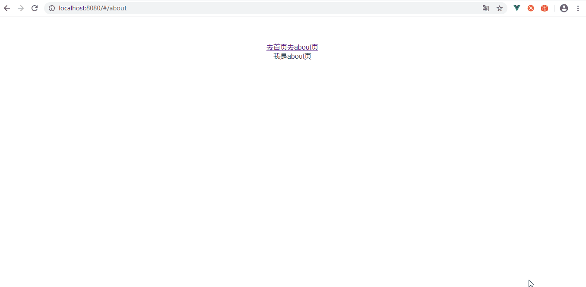

手写一个mini版本vue-router
mini版本vue-router
router的挂载流程
1 | //首先我们看看原本的vue-router都挂在流程 |
1 | //main js文件 |
Vue.use都干了什么
1 | 1.首先我们Vue.use() 默认会调install方法 所以我们需要在你传进去的构造函数上 添加一个install方法 |
1 | //如下所示 |
1 | //我们在new Vue的时候传进去了配置项 |
如何在每个组件上拿到router实例
1 | 1.我们知道每个Vue组件都是一个Vue的实例 |
Vue.mixin() API
1 | 1.这个api会把我的new Vue的时候 传入的配置对象 给每个组件的属性混合一起 |
给每个组件都添加router实例
1 | 1.我们知道 我们的router实例 实在根组件的时候在会传进去的 所以我们要判断 是不是根组件 如果不是 我们就继续向上找 |
1 | let Vue |
添加属性
1 | 1.我们知道在每个Vue的组件里 都可以使用this.$route 和 this.$route |
生成组件
1 | 1.以上我们已经完成了增加属性 |
1 | let Vue |
1 | //下面我们就在app.vue里使用了这个组件 |

1 | //我们看到上面已经实现了组件的跳转 并且地址栏也改变了 接下来就是要拿到我们的路由表 然后 把对应的组件渲染在视口里面 |
拿到路由表
1 | 1.我们在new Router时候 传进去了配置项目 里面就有我们的路由表 |
1 | //在实例里拿到路由表之后 我们就需要处理一下路由表的格式变成我们上面的那样 然后我们在定义一个默认的显示的路径 让我们的router-view去默认显示这个路径下的路由 |
点击跳转路由 router-view切换不同的组件
1 | 1.上面我们已经设置当前路由 所以当我们点击按钮的时候 就应该把当前路由的路径改变 |
1 | /* eslint-disable no-unused-expressions */ |

1 | //这里看到我们的地址栏是变的了 但是我们的组件并没有没渲染出来 这是因为我们的这里的赋值给当前路径不是响应式的 所以没有发生改变 |
当前路由路径响应式
1 | 1.因为数据现在不是响应式的 所以没有发生改变 |
1 | /* eslint-disable no-unused-expressions */ |

总结
1 | 1.Vue.use的时候 我们会默认调用install这个函数 形参是Vue实例 |
公告
感谢访问本站，如喜欢请收藏。本站主要分享前端知识，立志成为资深前端工程师，但目前是一个前端界的小学生 若喜欢可以打赏请博主喝一杯冰阔落
另外请大家多多支持淼哥的开源项目
https://github.com/flipped-aurora/gin-vue-admin
🌟🌟欢迎大家start 🌟🌟
欢迎加入博主的前端技术交流群